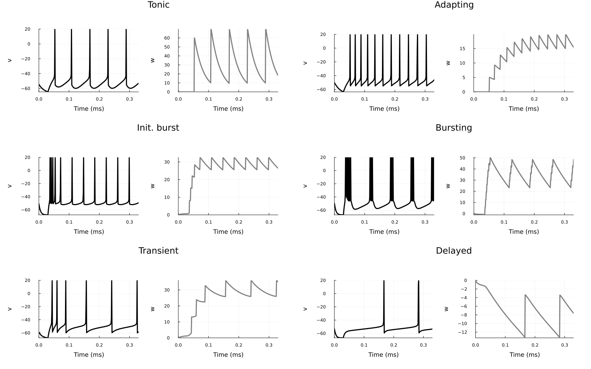

Models Examples
AdEx neuron
A single neuron under a fixed depolaring current can be modeled with an Adaptive Exponential model, with equations:
\[\begin{aligned} \tau_m \frac{dV}{dt} &=& (V^s-V_r) + \Delta_T \exp{\frac{V^s-V_t}{\Delta_T}} - R (w + I) \\ \tau_w\frac{dw}{dt} &=& -w + a (V^s-V_r) + b \cdot \delta(t-t_{spike}) \end{aligned}\]
This model is implemented in the AdEx neuron model. The AdEx model can reproduce several different firing patterns observed in real neurons under direct current injections in the soma (AdEx firing patterns, Adaptive exponential integrate-and-fire model as an effective description of neuronal activity).
using SNNPlots
import SNNPlots: vecplot, plot
using SpikingNeuralNetworks
using DataFrames
SNN.@load_units
# Define the data
data = [
("Tonic", 20, 0.0, 30.0, 60.0, -55.0, 65),
("Adapting", 20, 0.0, 100.0, 5.0, -55.0, 65),
("Init. burst", 5.0, 0.5, 100.0, 7.0, -51.0, 65),
("Bursting", 5.0, -0.5, 100.0, 7.0, -46.0, 65),
# ("Irregular", 14.4, -0.5, 100.0, 7.0, -46.0, 65),
("Transient", 10, 1.0, 100, 10.0, -60.0, 65),
("Delayed", 5.0, -1.0, 100.0, 10.0, -60., 25)
]
# Create the DataFrame
df = DataFrame(
Type = [row[1] for row in data],
τm = [row[2] for row in data],
a = [row[3] for row in data],
τw = [row[4] for row in data],
b = [row[5] for row in data],
ur = [row[6] for row in data],
i = [row[7] for row in data]
)
# Display the DataFrame| Row | Type | τm | a | τw | b | ur | i |
|---|---|---|---|---|---|---|---|
| 1 | Tonic | 20 | 0.0 | 30.0 | 60.0 | -55.0 | 65 |
| 2 | Adapting | 20 | 0.0 | 100.0 | 5.0 | -55.0 | 65 |
| 3 | Init. burst | 5.0 | 0.5 | 100.0 | 7.0 | -51.0 | 65 |
| 4 | Bursting | 5.0 | -0.5 | 100.0 | 7.0 | -46.0 | 65 |
| 5 | Irregular | 14.4 | -0.5 | 100.0 | 7.0 | -46.0 | 65 |
| 6 | Transient | 10 | 1.0 | 100 | 10.0 | -60.0 | 65 |
| 7 | Delayed | 5.0 | -1.0 | 100.0 | 10.0 | -60.0 | 25 |
plots = map(eachrow(df)) do row
param = AdExParameter(
R = 0.5GΩ,
Vt = -50mV,
ΔT = 2mV,
El = -70mV,
# τabs=0,
τm = row.τm * ms,
Vr = row.ur * mV,
a = row.a * nS,
b= row.b * pA,
τw = row.τw * ms,
At = 0f0
)
E = SNN.AdExNeuron(; N = 1,
param,
)
SNN.monitor!(E, [:v, :fire, :w], sr = 8kHz)
model = merge_models(; E = E, silent=true)
E.I .= Float32(05pA)
SNN.sim!(; model, duration = 30ms)
E.I .= Float32(row.i)
# E.I .= row.i, # Current step
SNN.sim!(; model, duration = 300ms)
default(color=:black)
p1 = plot(vecplot(E, :w, ylabel="Adapt. current (nA)"),
vecplot(E, :v, add_spikes=true, ylabel="Membrane potential (mV)", ylims=(-80, 10)),
title = row.Type,
layout = (1,2),
size = (600, 800),
margin=10Plots.mm)
end
plot(plots...,
layout = (7, 1),
size = (800, 2000),
xlabel="Time (ms)",
legend=:outerright,
leftmargin=15Plots.mm,
)